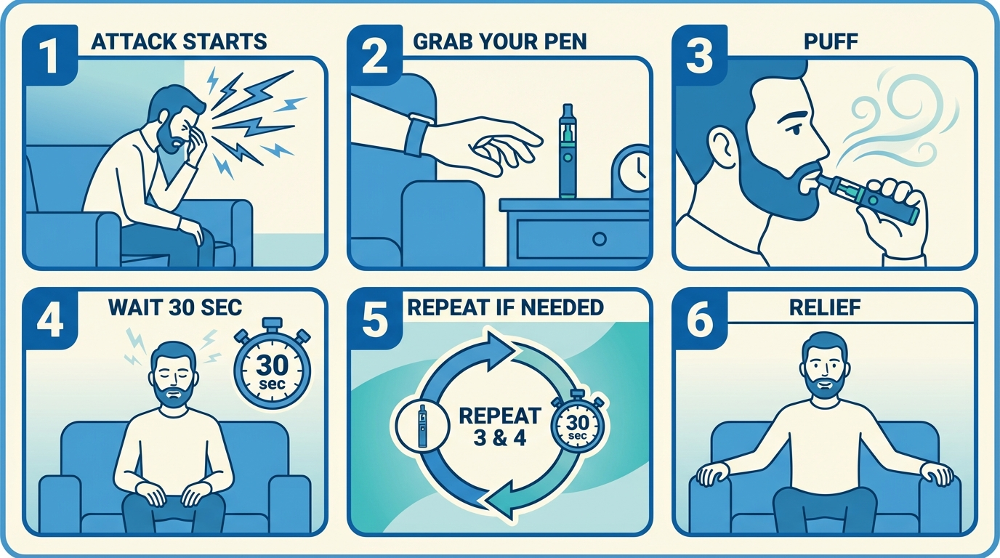

A small inhalation of this substance could stop your attacks in seconds.
It acts almost instantly, wears off in minutes, and carries minimal health risks at the doses used (provided you first check for drug interactions).
DMT is not a miracle cure. It’s illegal in most countries, it’s not FDA-approved for cluster headaches, and it won’t work for everyone. But for a growing community of patients who have tried everything else, it has become an indispensable tool; sometimes the only thing that reliably stops the pain.
This guide was written for you: someone in serious pain, probably unfamiliar with drugs, looking for clear and honest information.
Aborting means stopping an attack once it starts. Here’s the procedure at a glance.

You sit down, take a small puff from a vape pen (a small handheld device that heats the DMT into a vapor you inhale), and wait. Within moments, you feel a warm or buzzing sensation, and the pain stopping. If it doesn’t, you wait 30 seconds and take one more puff. That’s it. No bulky oxygen tank, no waiting for a triptan or oxygen to kick in.
What DMT is, why it works for cluster headaches, and what it feels like at low doses.
→Which medications are dangerous to combine with DMT, and how to minimize risks.
→Quick answers to the most common questions.
→Everything you need to buy and how to set it up, from scratch.
→The step-by-step protocol: how to inhale, how much to take, and what to expect.
This guide is for informational and harm-reduction purposes only. It does not constitute medical advice. DMT is a controlled substance: illegal to possess, manufacture, or distribute in most countries, including the United States (Schedule I) and most of Europe. The authors of this guide do not encourage or condone illegal activity. Consult a qualified healthcare professional before making any changes to your treatment.